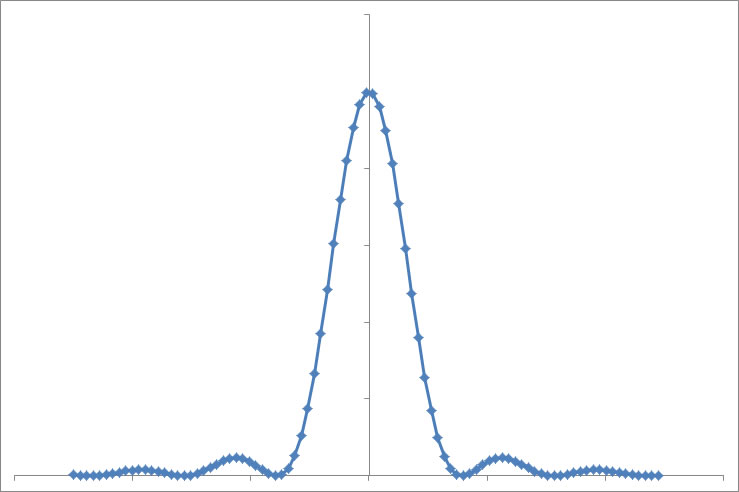

像分布関数 (PSF , Point spread function) について-05
周期が，
\( \Large x = \frac{\lambda L}{ w} \)
であるcos関数（中央が最大値となるので）は，
\( \Large cos \left( 2 \pi \frac{w}{\lambda L} x \right)= cos (kwx) \)
となります．
これを，ｗ，を0から一定値（ｈとします）まで積分して，二乗（強度なので）したものが，結像面での強度分布となります．
\( \Large \begin{eqnarray} I &=& \left[ \displaystyle \int_{0}^{ h } cos(kwx) dw \right]^2 \\
&=& \left[ \frac{1}{kx} sin kwx \right]^2 \\
&=& \frac{sin^2 khx}{(kx)^2} \\
\end{eqnarray} \)
A≡khとすると，
\( \Large \propto \frac{sin^2 Ax}{ (Ax)^2} \)
と簡単に書くことができます．
エクセルで計算すると，

となり，ここ，で示したのと同様のカーブとなります．
次に，レンズではなく，微小開口から発せられた光がどう回折するのかを検証しましょう．